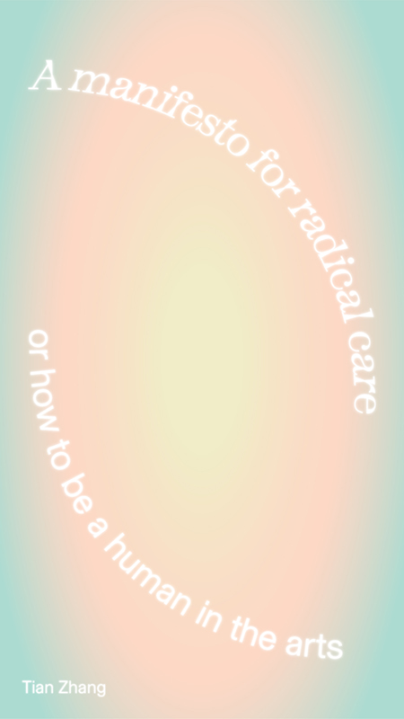
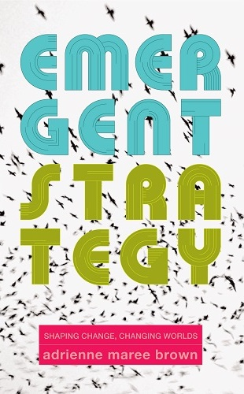
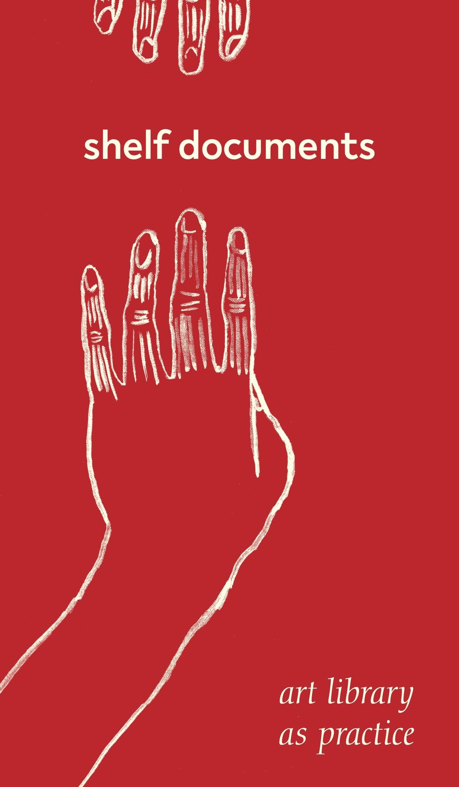

water your knowledge
BOOK LISTA reading list of books, publications and other writings on art, design, community, collectivity and inclusivity, which have inspired the making of this garden space. Browse through — and may these plant something anew in your minds.

A Community is a Garden
Kanyinsola Anifowoshe and Mikki JanowerArt and Design
Collective Practice


A Tender Talk, Tender Structures For Collaborative Work
Jenna Porter, Iris Lee & Shan WallaceArt and Design
Collective Practice
Care Work

Design Justice
Sasha Constanza-ChockArt and Design
Collective Practice
Climate Justice
Disability Justice
Race and Multiculturalism

Living and Loving in Diversity: An anthology of Australian multicultural queer adventures
Maria Palotta-ChiarolliCommunity
LGBTQIA+
Teaching to Transgress: Education as the Practice of Freedom
bell hooksCommunity
Teaching/Pedagogy
Race and Multiculturalism

Software for Artists Book #001: Building Better Realities
Salome Asega, Stephanie Dinkins, Grayson Earle, Ann Haeyoung, Rindon Johnson, Ryan Kuo & Tsige TafesseArt and Design
Collective Practice
Digital and Technology
Futuring


Care Work: Dreaming Disability Justice
Leah Lakshmi Piepzna SamarasinhaDisability Justice
Community
Care Work
Race and Multiculturalism
LGBTQIA+

Speculative Everything
Anthony Dunne & Fiona RabyArt and Design
Futuring
Digital and Technology

Stories Out West
ACON x Sweatshop Writers Literacy MovementRace and Multiculturalism
LGBTQIA+
Community
Racism: Stories on Fear, Hate and Bigotry
Winnie Dunn, Stephen Pham and Phoebe GrainerRace and Multiculturalism
Community

Shelf Documents: Art Library As Practice
Heide Hinrichs, Jo-ey Tang & Elizabeth HainesArt and Design
Collective Practice

Indigenous Peoples Rise Up: The Global Ascendency of Social Media Activism
Bronwyn Carlson and Jeff BerglundRace and Multiculturalism
Digital and Technology
Collective Practice

The Art of Activism and the Activism of Art
Bronwyn Carlson and Jeff BerglundArt and Design
Community
Collective Practice